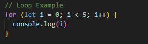

What is JavaScript?
JavaScript(JS) is the language of the web; it is a scripting language
that is commonly used to creat interactive and dynamic webpages. Rather
than everything flat and similar to a painting, JS allows HTML and CSS
to be updated aswell as calculate, manipulate and validate data.
Some basic concepts of JS can be split up into:
arrays, objects, functions, loops and control flow.
Arrays and Objects
Arrays and objects are both data types in JS that are mutable and store
collections of data. Since they are so similar, in what situations would
you use either of them?
Objects
Objects are ussed to represet a specfic thing in the code. It can be
anything from a user, a car, an animal, etc. These things all have
characteristics that can be made into properties of that certain thing.
In JS objects, properties are called keys and they have a value assigned
to them. For exmaple:
Objects can be accessed, properties added, changed, removed by dot
notation.
Arrays
Arrays are used when there is a list of items that need to be stored
into a single variable. They are useful when you need to create ordered
collections which need to be accessed by indexed. They can also store
any sort of data from strings, numbers, booleans, objects or other
arrays.
Functions
A function is code that is designed to perform tasks. It is executed
when it is called for in the code. Functions can take parameters and use
them within the code; they also return values back to use in the greater
code block. Functions are pretty much like a recipe that you can use
over and over again without rewriting the same thing every single time
you want to make that specific thing.
Loops
In JS, loops allow a sequence of code to be repeated for a given amount
of times. The amount of times a loop is repeated for is decided by the
iterator within the loop which is usually denoted by the variable
i. The iterator changes value after every time the loop
is iterated through and when it reaches the value which it is meant to
stop at, the loop stops. Loops are a efficent way of iterating through
objects and arrays to change values or perform and repetitive task
efficiently. In the example below, the loop will console log the value
of the iterator at every iteration. At the end of the iteration, the
iterator goes up by 1 and the max value it can have is 4.

Control Flow
Control flow is the order in which code is executed; code will be
executed from the top to the bottom by the computer. It is just like
instructions you follow to make a model gundam for example, you wouldn't
build something from the end and go to the start, you'd do it in order.
The DOM
The Document Object Model or DOM represents the whole webpage including
the HTML, CSS and JavaScript combined into one. JavaScript can
manipulate the DOM through the document interface to change HTML and CSS
elements. It can be viewed through the Chrome Developer Tools,
CTRL+SHIFT+I. The document acts as the roots of the webpage and HTML and
CSS make up different branches of the tree.